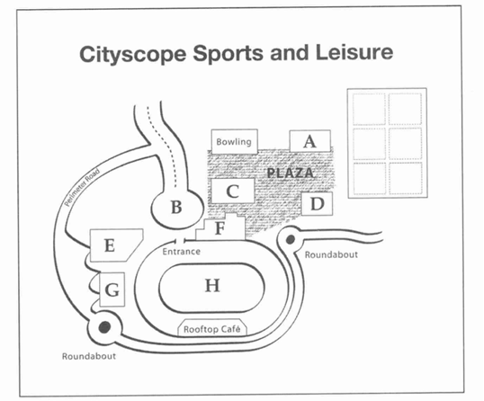

Questions 1-4
Complete the notes below.
Write ONE WORD AND/OR A NUMBER for each answer.
Inquiry about a part-time job
Example: Job: Waiter
Restaurant Name: 1. Restaurant
Work hours: 6:00 pm to 2. pm
Salary: £3. per hour
Benefits: Free 4.
Questions 5-10
Complete the table below.
Write NO MORE THAN TWO WORDS for each answer.
| Day | Duty |
|---|---|
| Monday | Cleaning the 5. |
| Tuesday | Preparing 6. |
| Wednesday | Taking 7. |
| Thursday | Serving 8. |
| Friday | Helping the 9. |
| Saturday | Washing 10. |
Questions 11-15
Label the map below.
Write the correct letter, A-H, next to questions 11-15.

11. Information Center:
12. Souvenir Shop:
13. Picnic Area:
14. Playground:
15. Cafe:
Questions 16-20
Complete the sentences below.
Write NO MORE THAN TWO WORDS for each answer.
16. The park was opened in the year .
17. Visitors can see many types of in the garden.
18. The is the most popular attraction.
19. You must not feed the .
20. The park closes at during summer.
Questions 21-25
Choose the correct letter, A, B or C.
21. What did the students decide to study?
A. The history of coffee
B. The production of tea
C. The economics of sugar
Answer:
22. Why did they choose this topic?
A. It is easy to find resources
B. They are interested in it
C. Their teacher suggested it
Answer:
Questions 31-40
Complete the notes below.
Write ONE WORD ONLY for each answer.
The Impact of Technology on Education
History:
First computers were used in schools in the 31. .
Benefits:
Allows students to access a vast amount of 32. .
Helps with 33. skills.